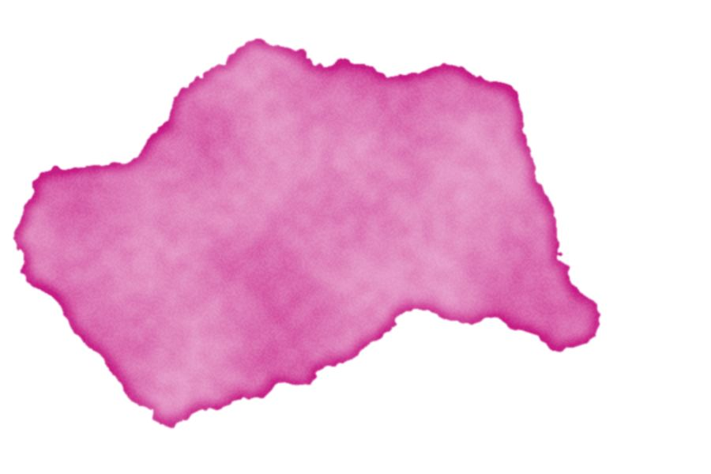

Discover the history of the Stephens Shire
The Annerley-Stephens History Group Inc has an event on 7th November at the Yeronga Community Centre. It's a chance to learn more about what shaped our local area, originally the Stephens Shire.
Read the story